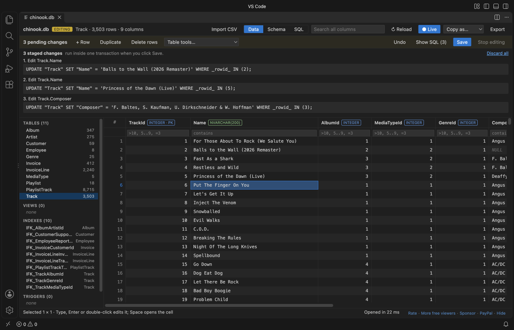
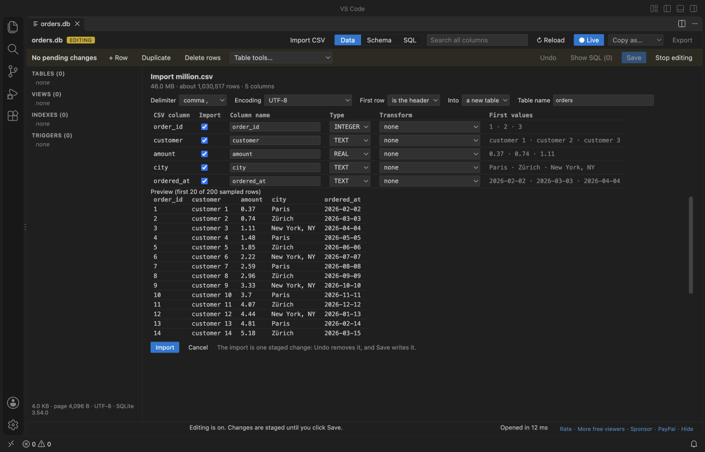
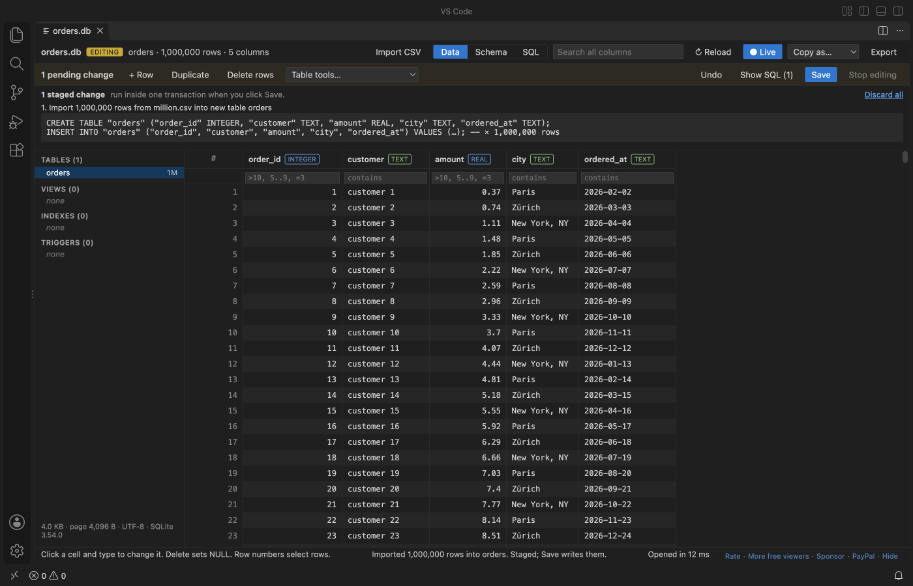
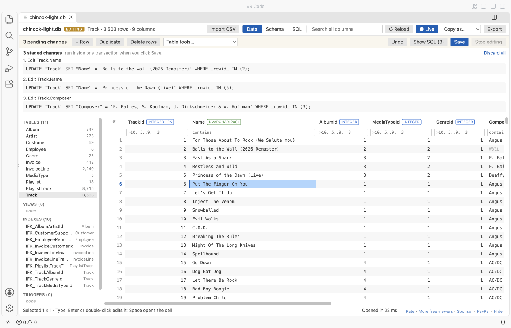

SQLite Editor & Viewer, SQLite3 Database Browser (Edit Cells, CSV Import)
SQLite Editor & Viewer, SQLite3 Database Browser (Edit Cells, CSV Import), a VS Code extension by Zovo
Free, no paywall, no sign-in, works offline. Opening, viewing, editing, Save and CSV import cost nothing, and there is no license banner.
Free, MIT license. Needs VS Code 1.90.0 or newer. Extension ID zovo.sqlite-table-viewer, version 0.2.3.
Click a .db or .sqlite file and it opens read-only. Click Enable editing to change cells and rows, run INSERT or UPDATE, or import a CSV file. Every change waits in a pending list with its SQL and Undo. Save checks the constraints, makes a backup copy and replaces the file in one step.

A real VS Code window with the Chinook sample database. Three cells were changed; nothing is on disk until Save.
- Read-only until you say so. Nothing is written before you click Enable editing and then Save. Before editing starts it tells you when another program has the file open, when the
-walfile holds transactions that are not in the main file yet, or when a-journalshows a write in progress. - Safe Save. A backup copy first (
name.db.20261109-143000.bak), then the new file goes to a temp file, is flushed to disk and replaces the old one with a rename. If the file changed on disk since you opened it, Save refuses and keeps your changes. - CSV and TSV import. 1,000,000 rows import in about 2 seconds with a progress bar and Cancel. Pick the delimiter, encoding and header row, map the columns, then Save.
- Sees the
-walfile and reloads live while your app writes, as before. - No network. Plain JavaScript and SQLite compiled to WebAssembly, running in VS Code. No telemetry.
Quick start
- Install SQLite Editor & Viewer.
- Click any
.db,.sqlite,.sqlite3,.db3,.s3db,.sl3,.vscdbor.gpkgfile. It opens as a table, read-only. - To change it, click Enable editing. Double-click a cell (or press Enter, F2, or just type), change it, press Enter. Press Save (Ctrl+S or Cmd+S) when you are done.
To make a new database from a CSV file, right-click the .csv file in the Explorer and pick Import CSV into a new SQLite database.
Questions people ask
Is SQLite Editor & Viewer, SQLite3 Database Browser (Edit Cells, CSV Import) free?
Yes. SQLite Editor & Viewer, SQLite3 Database Browser (Edit Cells, CSV Import) is free and MIT licensed.
How do I install SQLite Editor & Viewer, SQLite3 Database Browser (Edit Cells, CSV Import)?
Click "Install in VS Code" above, or search for zovo.sqlite-table-viewer in the Extensions view.
Editing
| Action | How |
|---|---|
| Change a cell | Double-click, Enter, F2 or type. Enter saves the cell and moves down, Tab moves right, Esc cancels. |
| Set NULL | Select one cell and press Delete. |
| Long text, JSON, BLOB | Space opens the cell panel. Pick TEXT, INTEGER, REAL, NULL or BLOB (hex), or Load file into cell. Save BLOB to file writes a BLOB out. |
| Add, copy, remove rows | + Row, Duplicate, Delete rows (or click row numbers and press Delete). A new row fills NOT NULL columns, and a NOT NULL foreign key gets an existing parent key. |
| SQL | INSERT, UPDATE, DELETE, REPLACE, CREATE, DROP and ALTER run in the SQL tab as staged changes. BEGIN, COMMIT, ATTACH and VACUUM do not: the editor owns the transaction. |
| Table tools | Add, rename and drop columns, rename a table, find and replace in a column. |
| Undo | Undo (Ctrl+Z or Cmd+Z in the grid) takes back the last change. Show SQL lists every staged statement, Discard all drops them. |
Values are stored the way the column asks: typing 42 into an INTEGER column stores the number 42, 007 stays text, and a 64-bit integer keeps every digit. A CHECK, NOT NULL, UNIQUE or foreign key error refuses only that one change and says which constraint it was. Your other pending changes stay.
What Save does
- Looks at the file again. If its size, modified time or header changed since it was loaded, Save stops: another program wrote to it.
- Stops when the
-walfile holds committed frames or a hot-journalexists. "Checkpoint and reload" runsPRAGMA wal_checkpoint(TRUNCATE)with the sqlite3 tool when it is installed. - Checks foreign keys (
PRAGMA foreign_key_check) and runsPRAGMA quick_check. A deferred foreign key that breaks is named with its table and row. - Copies the file to
name.db.YYYYMMDD-HHMMSS.baknext to it, or to~/.zovo-sqlite-backups(settingsqliteTableViewer.backupLocation). - Writes the new database to a temp file in the same folder, flushes it to disk, and renames it over the original. A WAL-mode database stays in WAL mode.
A crash at any point leaves the old file or the new one, never half of each. The tests open every saved file in the sqlite3 tool and run PRAGMA integrity_check.
Import CSV and TSV

- Import CSV in the toolbar adds a table to the open database, or adds rows to an existing table (CSV columns map to table columns by name).
- The preview shows the first 200 rows. The delimiter (comma, semicolon, tab, pipe), the encoding (UTF-8, Windows-1252, UTF-16) and the header row are guessed and can be changed. Column types are guessed as INTEGER, REAL or TEXT, and values with leading zeros (ZIP codes, IDs) stay TEXT.
- Quoted fields with commas, doubled quotes and line breaks inside quotes are read correctly.
- The file is read in 1 MB pieces, so a large file never sits in memory as text. The progress bar shows rows and bytes, and Cancel rolls everything back.
- A row that breaks a constraint stops the import at its line number and adds nothing.
- The whole import is one staged change: Undo removes it, Save writes it.

1,000,000 rows (46 MB of CSV) imported in a real VS Code window in about 2 seconds, then saved. The grid stayed responsive the whole time.
Why this one
People who use SQLite tools in VS Code have reported these problems. The right column says how this extension behaves, and which test checks it.
| Reported problem | Link | Here |
|---|---|---|
| A paid tier blocks basic use: "paywall makes it really bad, can't even open the db" (September 2026), "Says it's free but it's not free" (September 2026). | Marketplace reviews of a popular SQLite viewer | Opening, viewing, editing, Save and CSV import are free, with no account and no license banner. |
| Changes reached the disk only after the editor tab was closed. | sqlite3-editor issue 87 | Save writes the file at once. The real VS Code test opens the file in the sqlite3 tool right after Save and finds the new values and integrity_check ok. |
| Opening a database locked it, so the app that owns it got "attempt to write a readonly database". | sqlite3-editor issue 60 | The file is read into memory and closed. Another program can keep writing while it is open, and the view reloads. The test writes to the file from the sqlite3 tool during an edit. |
| A database was reported damaged after it was opened in an editor while it was in use. | sqlite3-editor issue 49 | Read-only until Enable editing. Save refuses a file that changed, a -wal with pending transactions and a hot journal, makes a backup, and replaces the file atomically. |
Large files
The whole database is loaded into memory. Files up to 512 MB open (setting sqliteTableViewer.maxFileSizeMB), and rows are fetched one page at a time, so a table with millions of rows scrolls as fast as a small one. Editing is limited to 256 MB (setting sqliteTableViewer.editMaxFileSizeMB), because Save needs a second copy in memory. A larger file stays open read-only and says so. In the real VS Code test a 301 MB database with 1,000,000 rows opened in under 2 seconds and scrolled to its last row.
Reading
Pick a table or view on the left. Click a column header to sort, type under a header to filter (>10, 5..9, =word, !word, empty), or search every column at once. Filter values are bound parameters, never pasted into the SQL text.
When a database is in WAL mode, new transactions sit in name.db-wal until a checkpoint. This viewer reads the committed transactions from the -wal file, the way SQLite does, and a blue line says how many came from it. It checks the database and its -wal once a second and reloads with the same table, sort, filters and scroll position (the Live button turns this off). While editing is on, it does not reload. It shows a notice instead.
The Schema tab shows columns, keys, foreign keys and the CREATE statements. The SQL tab runs one statement at a time with a history of the last 20. The cell panel shows JSON as a tree, images as pictures and float32 BLOBs as vectors. Copy as puts the selection on the clipboard as CSV, TSV, JSON or INSERT statements. Export saves every row in view as CSV, JSON or SQL INSERT statements.

Settings
| Setting | Default | What it does |
|---|---|---|
sqliteTableViewer.maxFileSizeMB | 512 | Larger files show a message instead of loading |
sqliteTableViewer.editMaxFileSizeMB | 256 | Larger files open read-only; Enable editing says why |
sqliteTableViewer.backupLocation | nextToFile | nextToFile or homeFolder (~/.zovo-sqlite-backups) |
sqliteTableViewer.enforceForeignKeys | true | While editing, PRAGMA foreign_keys = ON, and Save checks every foreign key |
sqliteTableViewer.copyMaxRows | 100000 | Most rows copied to the clipboard at once |
sqliteTableViewer.exportMaxRows | 1000000 | Most rows written to one export |
sqliteTableViewer.autoReload | true | Reload when the database or its -wal file changes (not while editing) |
sqliteTableViewer.askForRating | true | Ask for a Marketplace rating at most twice, never after an error |
Limits
- Editing works for files on this computer. Files on remote or virtual file systems open read-only.
- If you close the tab with unsaved changes, they are dropped and the file stays as it was. A notice says so.
- Encrypted databases (SQLCipher, SEE) cannot be opened. They get a clear message, and so do damaged files and files that are not SQLite.
- The
-shmfile is not read. It only speeds up the app that owns the database.
Privacy
No network requests and no telemetry. The database is read and edited in a worker thread on your computer. Two local tools may run: lsof (macOS and Linux) to see whether another program has the file open before editing and saving, and sqlite3 only when you click "Checkpoint and reload". The webview runs under a strict Content Security Policy with no remote scripts, and every value from the file is written as plain text, never as HTML.
License
MIT. sql.js is MIT and SQLite is public domain. See THIRD-PARTY-NOTICES.txt.
Guides
Install SQLite Editor & Viewer, SQLite3 Database Browser (Edit Cells, CSV Import)
Click the button to open VS Code and install it, or press Ctrl+P (Cmd+P on macOS) in VS Code and run ext install zovo.sqlite-table-viewer.
Free, MIT license. Needs VS Code 1.90.0 or newer. Extension ID zovo.sqlite-table-viewer, version 0.2.3.
Source code and issues are on GitHub.
Support this work
If this extension saves you time, you can support the work on GitHub Sponsors. Monthly tiers start at $5, and one-time tiers start at $15. Sponsorship is optional, and the tool works the same without it.